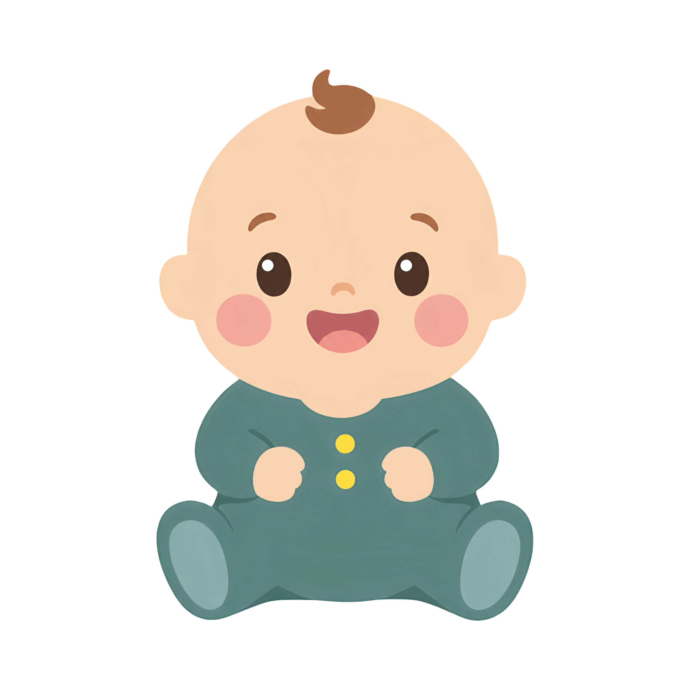
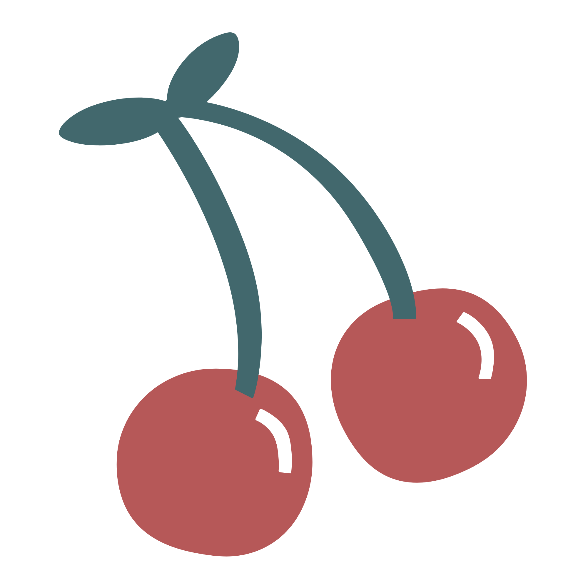
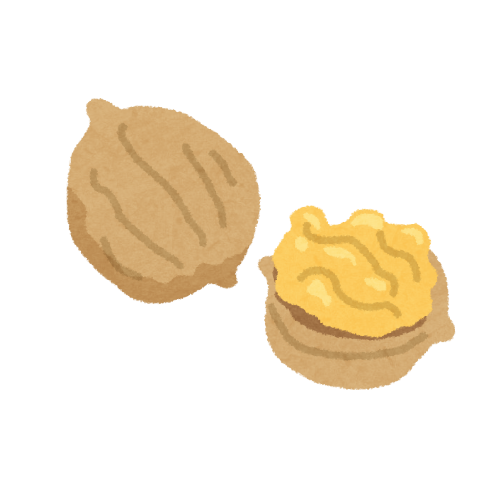
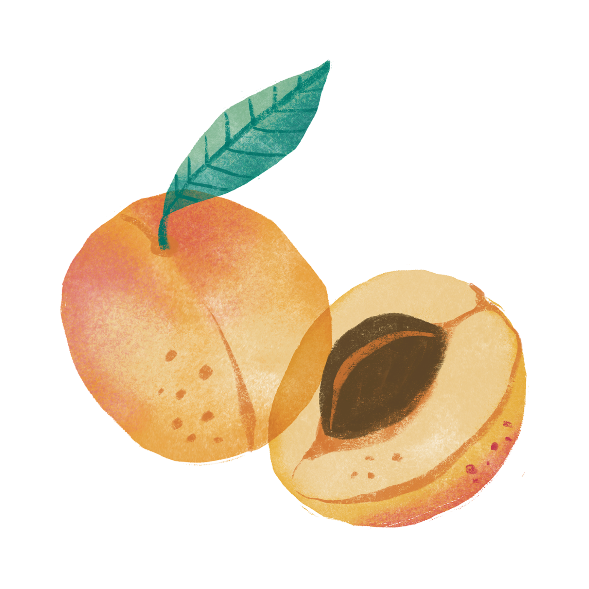
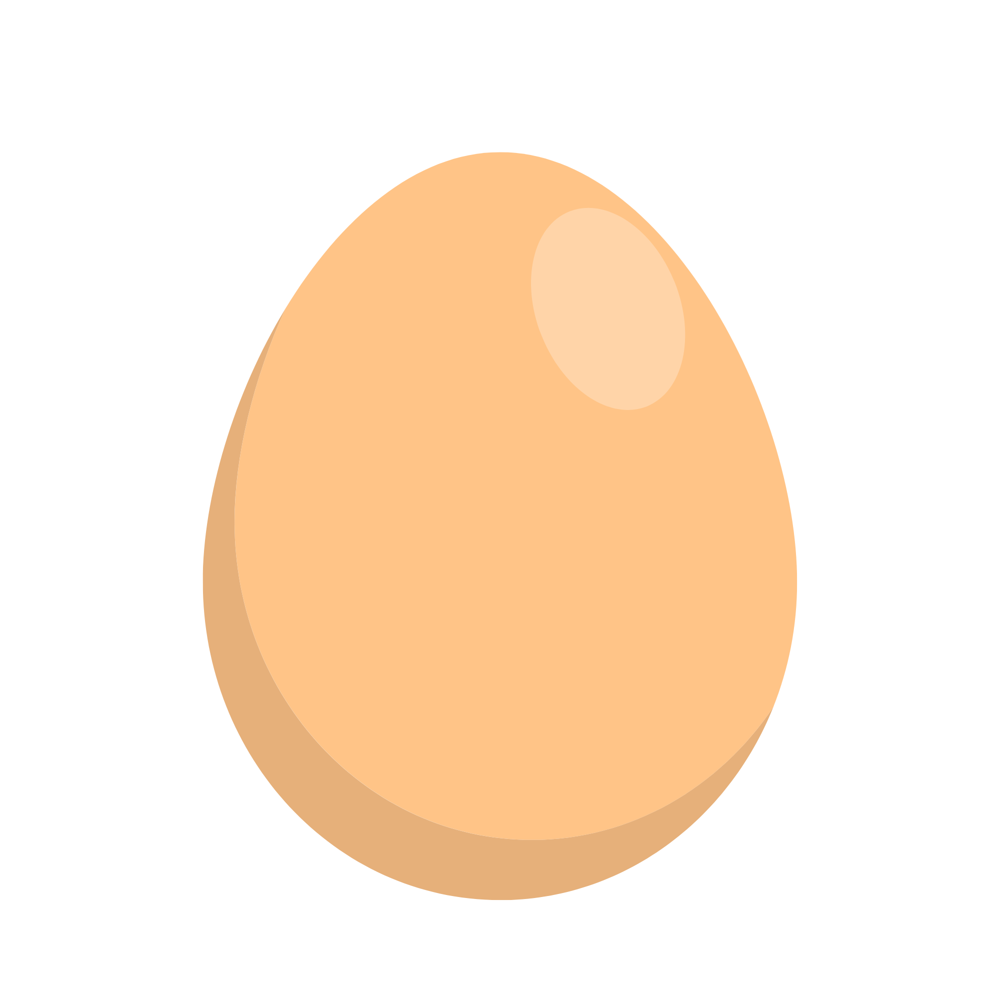

دليلكِ للعناية بطفلكِ
كل ما تحتاجين معرفته عن تغذية طفلكِ وإشاراته ونموه — بخطوات واضحة تطمئنكِ في كل مرحلة.

أهلاً بأصغر أفراد أسرتكِ 💚
اختاري موضوعاً من الأزرار بالأسفل لعرض تفاصيله في اللوحة المجاورة
حليبكِ وأنواعه
أثمن ما تقدمينه لطفلكِ منذ لحظاته الأولى
🥛
حليبكِ هو الغذاء المثالي لطفلكِ
- حليبكِ هو الغذاء المثالي لطفلكِ، ويوفر كل احتياجاته للنمو الجسدي والعقلي.
- يساعد على تقوية مناعة طفلكِ وحمايته من العدوى.
✨
ما هو اللبأ؟
- هو أول حليب ينتجه ثديكِ بعد الولادة.
- يكون عادةً أصفر أو كريمي اللون وأكثر كثافة من الحليب اللاحق.
- يحتوي على كمية مرتفعة من البروتين والفيتامينات والمعادن والأجسام المضادة.
- يساعد على دعم مناعة مولودكِ وحمايته من العدوى.
هل كمية اللبأ قليلة؟
نعم، يكون اللبأ قليل الكمية لكنه مركّز ومناسب تماماً لاحتياجات طفلكِ في الأيام الأولى، فاطمئني.
🌿
مراحل وأنواع حليبكِ
1
اللبأ
- أول حليب بعد الولادة، وغني بالبروتين والفيتامينات والمعادن والأجسام المضادة.
2
الحليب الانتقالي
- يظهر بعد اللبأ وتزداد فيه كمية الحليب.
- يحتوي على نسبة أعلى من الدهون واللاكتوز والفيتامينات مقارنة باللبأ، ويصبح لونه أكثر بياضاً.
3
الحليب الناضج
حليب بداية الرضعة
يكون أخف كثافة، ويحتوي بشكل أساسي على الماء والسكريات والفيتامينات والبروتين لإرواء عطش طفلكِ.
حليب نهاية الرضعة
يحتوي على نسبة أعلى من الدهون ليساعد طفلكِ على الشبع وكسب الوزن والطاقة.
💡
معلومة تهمكِ: في حال مرض طفلكِ، تتغير تركيبة حليبكِ الطبيعي تلقائياً لتعود إلى مرحلة اللبأ الغنية بالأجسام المضادة لتقوية مناعته ضد المرض.
علامات جوع وشبع طفلكِ
راقبي إشارات طفلكِ قبل أن يصل إلى مرحلة البكاء
إشارات الجوع عند طفلكِ
- مص يديه أو أصابعه
- وضع يده في فمه
- تحريك ذراعيه وساقيه بنشاط
- إحكام قبضتي يديه
- تحريك رأسه والبحث عند لمس خده أو فمه
تنبيه لطيف لكِ: إذا بدأ طفلكِ بالبكاء، فهدّئيه أولاً باحتضانه والتمسيد والتربيت عليه برفق قبل البدء بإرضاعه.
إشارات شبع وارتواء طفلكِ
- يصبح مصّه أبطأ وأكثر هدوءاً
- يترك ثديكِ بنفسه برضا
- ترتخي يداه وذراعاه وساقاه تماماً ويستسلم للراحة
سعة معدة طفلكِ
لماذا يطلب الرضاعة باستمرار؟ معدته الصغيرة تكبر تدريجياً معه

اليوم الأول
بحجم حبة الكرز — تتسع لكميات قليلة ومركزة من اللبأ

اليوم الثالث
تكبر لتصبح بحجم حبة الجوز

الأسبوع الأول
تصبح بحجم حبة المشمش

الأسبوع الثاني
تصبح بحجم البيضة
حفاضات طفلكِ ومؤشرات الرضاعة الجيدة
كيف تتأكدين أن رضاعة طفلكِ ممتازة؟
- زيادة وزن طفلكِ ونموه بما يتناسب مع عمره
- سماعكِ لصوت بلعه بوضوح أثناء الرضاعة
- تغير لون برازه تدريجياً من الأخضر في الأيام الأولى إلى الأصفر مع نهاية الأسبوع الأول
- تبليل الحفاضات بمعدل يصل إلى نحو 8 إلى 12 مرة يومياً
متابعة وزن طفلكِ ونموه
ماذا تتابعين في نمو طفلكِ؟
- وزن طفلكِ وطوله في مواعيده الدورية
- عدد رضعاته اليومية
- عدد حفاضاته المبللة والمتسخة
- نمط إخراجه المعتاد
متابعة النمو
علامات تستدعي الاطمئنان على طفلكِ
متى تستشيرين الطبيب وتطلبين الاطمئنان؟
- إذا لاحظتِ عدم زيادة وزن طفلكِ بالمعدل الطبيعي لعمره
- إذا انخفض عدد حفاضاته المبللة بشكل ملحوظ
- إذا كان بوله داكناً وله رائحة نفاذة واضحة
طفلكِ منخفض الوزن أو المريض
- تعتمد طريقة تغذية طفلكِ على قدرته الحالية على الرضاعة.
- بعض الأطفال يستطيعون الرضاعة بشكل كامل، وبعضهم جزئياً، وبعضهم قد يحتاج إلى إعطائه حليبكِ بطرق بديلة كالكوب أو الملعقة.
- تذكري دائماً أن حليبكِ الطبيعي يحتوي على أجسام مناعية وعوامل نمو وأحماض دهنية أساسية هي بمثابة دواء وتغذية مخصصة لحمايته وتعافيه.
إرضاعكِ لتوأم
- ثقي بجسدكِ؛ فأنتِ قادرة تماماً على إنتاج حليب يكفي لطفلين وحتى ثلاثة أطفال.
- اطلبي المساعدة والدعم دائماً في رعاية الأطفال والمهام المنزلية دون تردد.
- يمكنكِ إرضاع التوأم معاً في وقت واحد بمجرد إتقان وضعية الالتقام المناسبة.
- راحتكِ وغذاؤكِ المتوازن أساس استمرار طاقتكِ وإدرار حليبكِ.